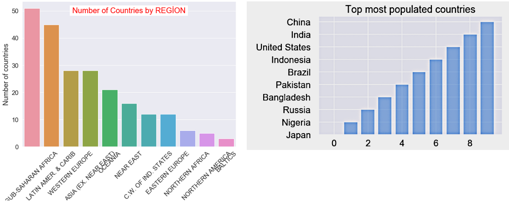
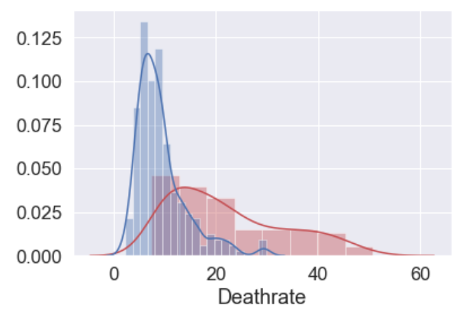
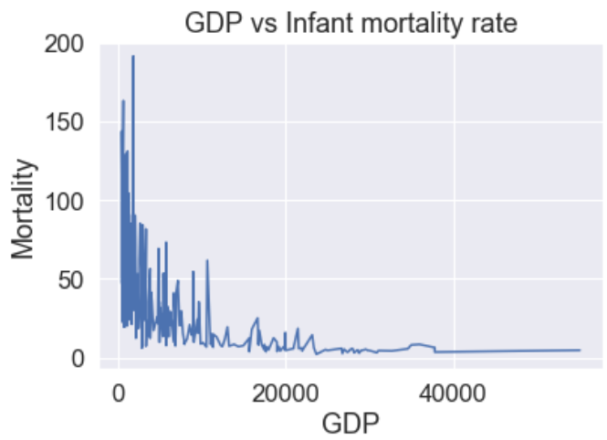
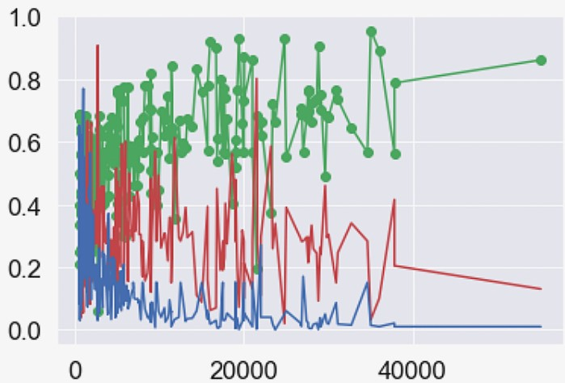
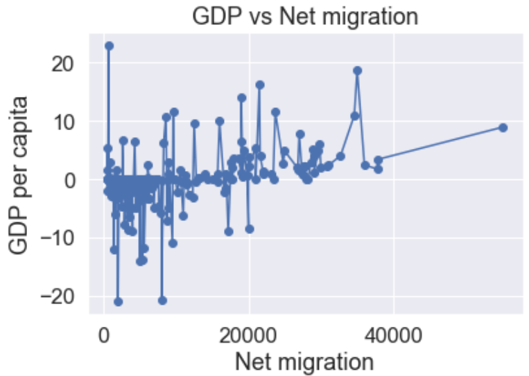

GDP relation to other economical factors; a basic Analysis of Kaggle Dataset
A dataset consisting of the records of GDP, agricultural growth, industrial growth, mortality and literacy rates and several other factors of countries was selected and cleaned for quick analysis. The data consists of 227 rows, covering states and countries of 11 regions in total and 20 attributes or columns. The analysis only re-affirms the general facts such as literacy and poverty being inversely related, or GDP relation to industrial growth etc.
Data Cleaning Steps
They depend heavily on the quality and type of the dataset you are working with. For this data I performed following steps i order to be able to run operations, some steps are necessary while many are absolutely for convenience. You may check dataset information with df.info function to decide.- Change the datatypes (I converted everything to float64)
- Remove missing and invalid values
- Remove duplicates and null rows
- Rename columns for convenience
- Drop columns that are not needed and save the final, clean copy of original dataset.
Analysed information
- The largest region is Africa with a total of 51 countries or states wheheras five of the top ten most populated countries belong to Asia, while Asia also being the third largest region.
- Countries with highest mortality are Afghanistan and Siera Leone, while with lowest mortality are Sweden, and Hong Kong. Moreover, countries with highest birth rates are also tha ones with higher deathrates, which is obvious, but the graph shows that the drop in deathrate is not as dramatic as in the birthrate for same countries. wich seems to almost completely disappear along the graph.
- The mortality rate (infant mortality) is inversely related to GDP, while the birthrate is inversely related to literacy. Which means, developed countries better facilitate health and nourishment of lives, but are also the ones with least numbers of births. tttttt
- agriculture and services are decreasing as the increase in GDP, but industries are increasing. Which shows that industries are contributing to GDP growth, but doesn't necessarily mean that agriculture and service are not contributing. It only shows the decline and focus shift of country's economic policy. The consequences of delince in agriculture are not visible here.
- Net migration is calculated as the number of people moving into a region minus the number of people moving out of it, or immigration-emigration. It seems to increase with the GDP, which aligns perfectly with the fact that developed countries have better opportunities and facilities, and are focus of attention, hence attracting even more people, who migrate and then have a reinforcing effect on the increasing GDP by contributing to the economy. Hence a direct relation.





GitHub Resources
Find notebook and dataset here